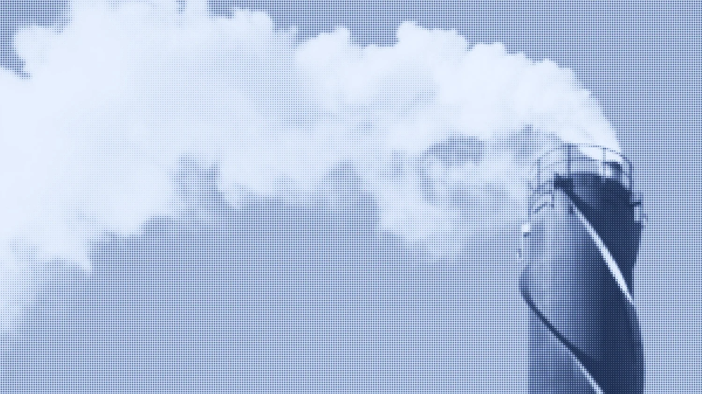
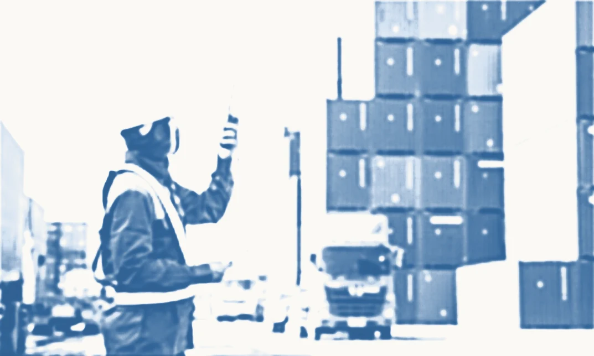
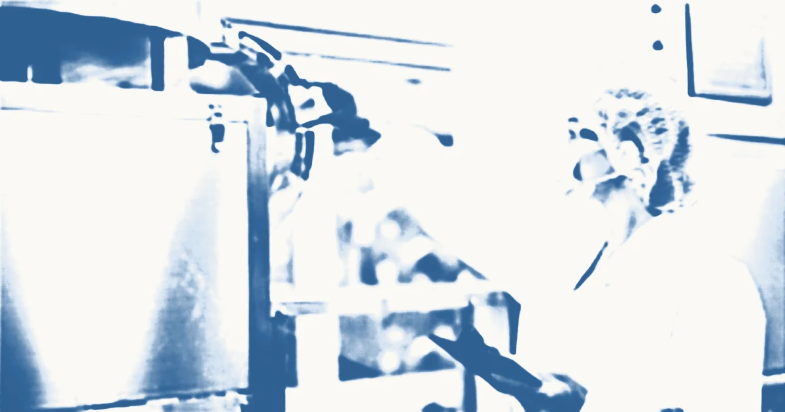

[ 01 ]
Certificação ISO
- ISO 9001: gestão da qualidade
- ISO 14001: ambiental
- ISO 45001: saúde e segurança
Busca certificação para a sua organização
Busca certificação para a sua organização

Reduz as emissões da sua operação

Atende às exigências dos seus clientes

Comprova a sua prática de sustentabilidade
Quatro frentes, e a sua organização costuma entrar por uma delas.
Serviços / [ IM.2 ]
Mais de 25 anos preparando organizações de diversos setores para as normas ISO 9001, 14001, 45001 e padrões de mercado.
[Saiba mais]Inventário, neutralização e registro de emissões de gases de efeito estufa segundo o GHG Protocol.
[Saiba mais]Consultoria para organizações que buscam atender aos padrões éticos SEDEX SMETA nas auditorias de 2 e 4 pilares.
[Saiba mais]Estruturação de práticas ambientais, sociais e de governança alinhadas aos padrões internacionais.
[Saiba mais]Verificação de produto pós-produção e antes do embarque: funcionamento, estado, embalagem, quantidade e requisitos.
[Saiba mais]Manutenção do sistema de gestão, auditorias internas e preparação para as recertificações periódicas.
[Saiba mais]Avaliações e emissão de laudos para atendimento às Normas Regulamentadoras do trabalho.
[Saiba mais]Consultoria para as normas e os padrões da gestão de segurança de alimentos, do APPCC à certificação.
[Saiba mais]Do diagnóstico à certificação, conduzimos cada etapa com o consultor dentro do seu processo.
Análise da situação atual e identificação de gaps em relação às normas.
Plano de implantação com responsáveis, prazos e entregas por visita.
Construção do sistema de gestão integrado à rotina da operação.
Verificação da conformidade e preparação para a auditoria de certificação.
Acompanhamento da auditoria do organismo certificador até o certificado emitido.
Mais de 25 anos preparando organizações de diversos setores para normas e padrões de mercado, do diagnóstico ao certificado.
Equipe de inspetores na Ásia, Europa e Oriente Médio. Verificamos produção e fornecedores na fonte, antes do embarque.
Desde 1998, cada projeto é conduzido de perto, com o consultor dentro do seu processo.
Atendemos os mais diversos segmentos produtivos.
Manufatura, metalurgia, plásticos e automotivo.
Transporte, armazenagem e cadeia de suprimentos.
Processamento, distribuição e food service.
Hospitais, laboratórios e dispositivos médicos.
Software, TI e serviços digitais.
Petróleo, gás, renováveis e utilities.


Norma nova, prazo de transição e o que muda na prática, quando sai.
Propostas e atendimento.